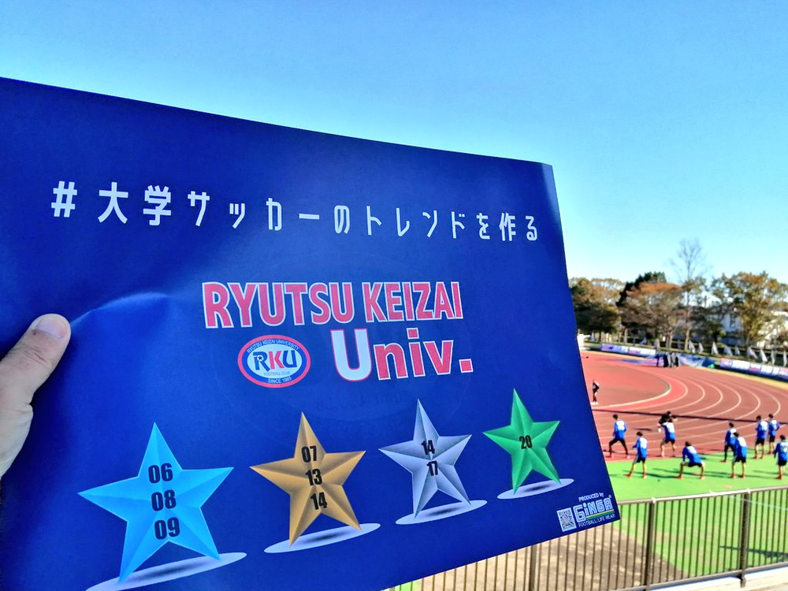

スポーツチームの
オリジナルグッズ
試合の応援、チーム物販、卒団や大会の記念に。

応援
試合や大会で、スタンドからチームを後押しするグッズ。
応援グッズをすべて見る


チーム物販
チームカラーやユニフォームの柄を、ファンが持ち歩けるグッズに。
チーム物販グッズをすべて見る

卒団・表彰
チームや大会の名前を入れて、節目に贈る記念品に。


試合の応援、チーム物販、卒団や大会の記念に。

試合や大会で、スタンドからチームを後押しするグッズ。
応援グッズをすべて見るチームカラーやユニフォームの柄を、ファンが持ち歩けるグッズに。
チーム物販グッズをすべて見るチームや大会の名前を入れて、節目に贈る記念品に。